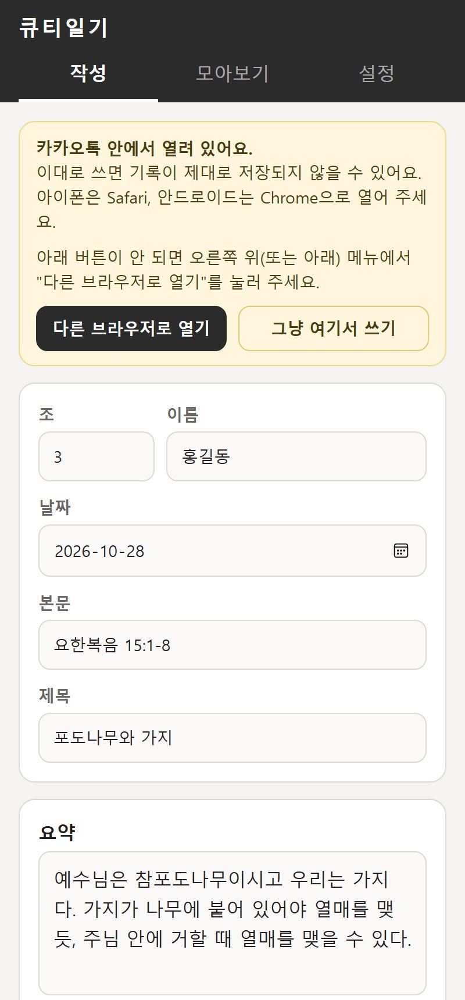
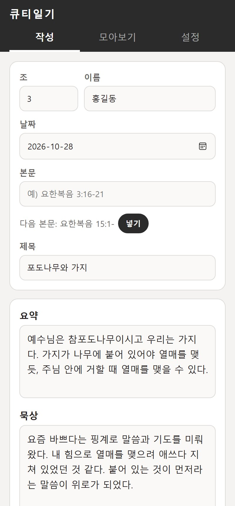
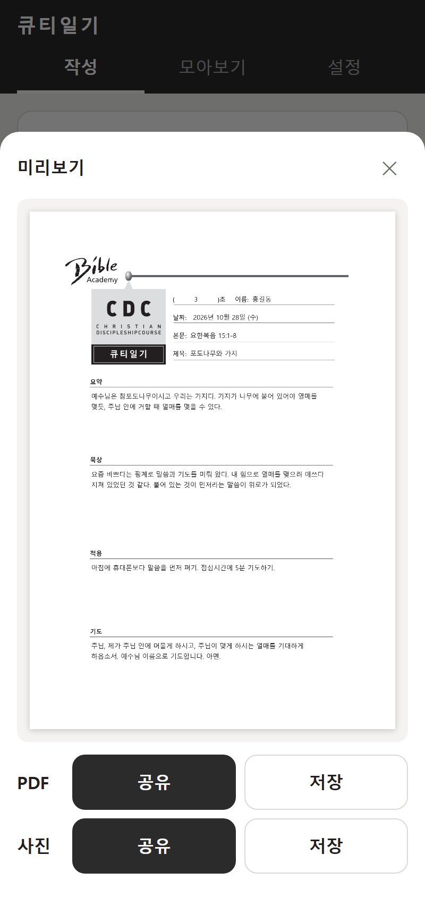
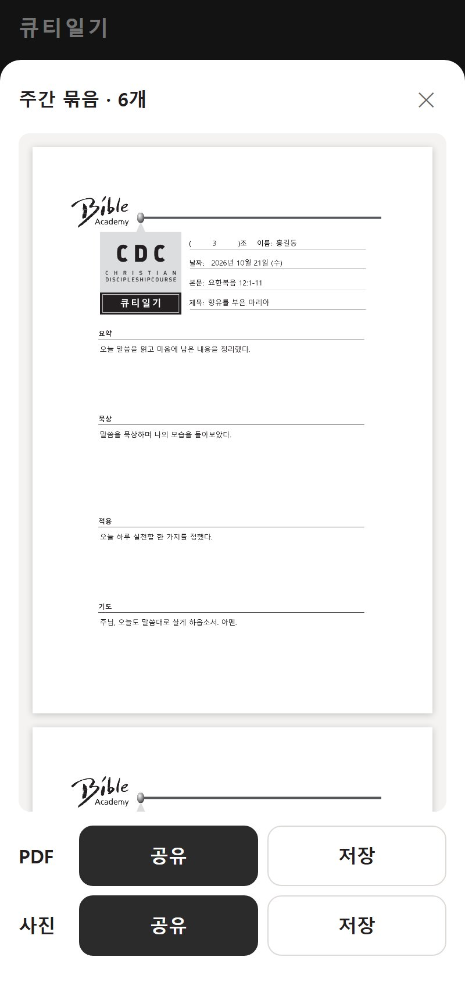
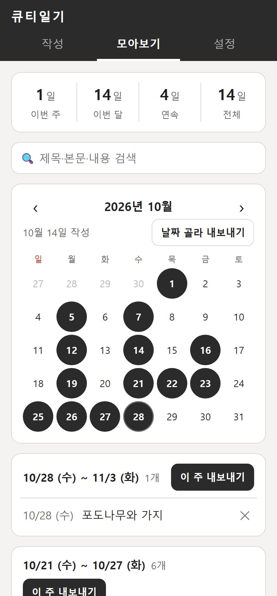
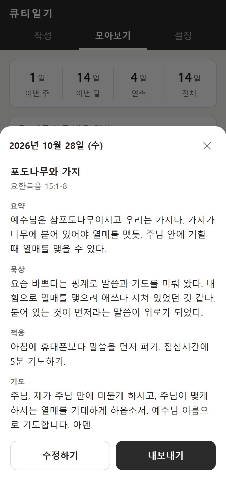
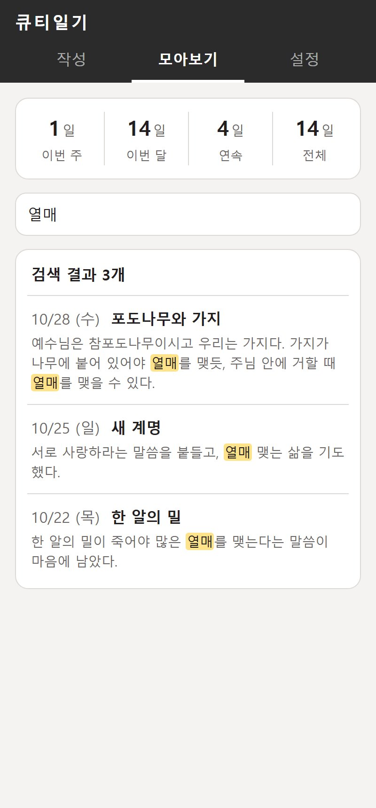
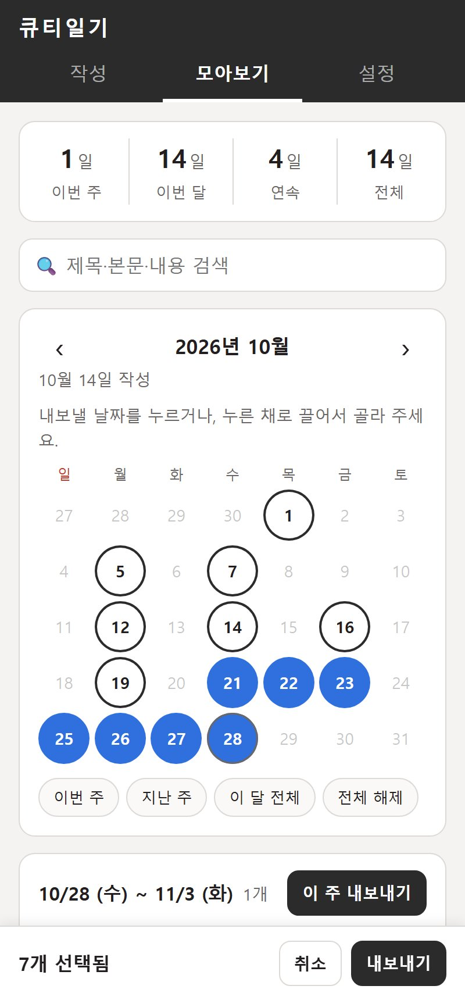
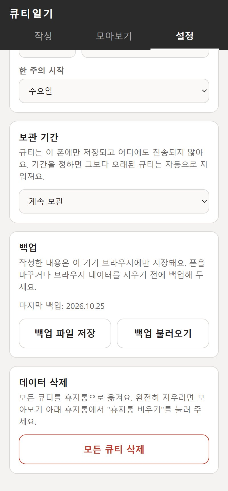
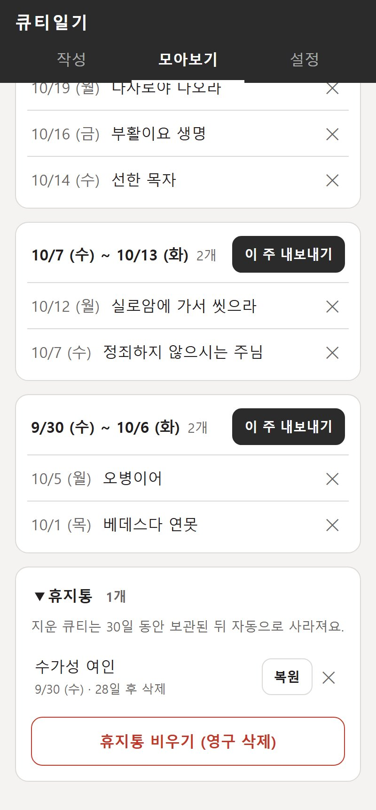

표지의 QR 코드를 찍거나, 아래 주소를 열어 주세요. 설치나 회원가입은 필요 없어요.
cattlyh55-sudo.github.io/qt-diary
카톡 안에서 링크를 누르면 카톡 전용 브라우저로 열려서, 쓴 내용이 제대로 저장되지 않을 수 있어요. 이때는 오른쪽 그림처럼 노란 안내가 떠요.
한 번 추가해 두면 앱처럼 아이콘을 눌러 열 수 있어요.
| 아이폰 (Safari) | 아래쪽 공유 ⬆ 버튼 → 홈 화면에 추가 → 추가 |
|---|---|
| 안드로이드 (Chrome) | 오른쪽 위 ⋮ → 홈 화면에 추가 또는 앱 설치 |
앞으로는 홈 화면 아이콘으로만 열어 주세요. 쓴 기록은 브라우저마다 따로 저장돼요. Safari, 홈 화면 앱, Chrome처럼 여러 곳에서 번갈아 열면 기록이 서로 안 보여요.
"작성한 큐티는 이 폰에만 저장돼요"라는 안내가 한 번 나와요. 확인을 누르면 다시 나오지 않아요.
쓴 큐티는 내 폰 안에만 저장돼요. 서버나 다른 사람에게 전송되지 않고, 내가 직접 내보낸 파일만 밖으로 나가요.

맨 위 탭에서 작성을 누르면 큐티일기 양식과 같은 순서로 칸이 나와요.
| 조 · 이름 | 처음 한 번만 쓰면 다음부터 자동으로 채워져요. |
|---|---|
| 날짜 | 오늘 날짜가 기본으로 들어가요. 밀린 큐티는 날짜를 눌러 바꿔 주세요. |
| 본문 · 제목 | 예) 요한복음 15:1-8 / 포도나무와 가지 |
| 요약 · 묵상 적용 · 기도 | 칸은 쓰는 만큼 늘어나요. 줄을 바꾸면 결과물에도 그대로 반영돼요. |
글자를 입력하면 바로 저장되고, 화면 아래에 "자동 저장됨 21:05"처럼 표시돼요. 앱을 닫거나 폰을 꺼도 내용은 남아 있어요.
맨 아래 새로 쓰기를 누르면 빈 양식이 열려요. 예전 큐티는 모아보기에서 누르면 작성 화면에 열리고, 고친 내용도 자동으로 저장돼요.

다 쓴 큐티는 큐티일기 양식 그대로 PDF나 사진으로 만들어져요.
| 공유 | 저장 | |
|---|---|---|
| 카톡 등으로 바로 보내기 | 폰에 파일로 저장 | |
| 사진 | 카톡 등으로 바로 보내기 | 폰에 사진으로 저장 |
컴퓨터에서는 공유 버튼이 안 보일 수 있어요. 이때는 저장을 눌러 주세요.
모아보기의 주별 목록에서 이 주 내보내기를 누르면, 그 주의 큐티가 날짜순으로 PDF 한 파일에 묶여요. (4장 참고)
큐티일기_3조_홍길동_2026-10-28.pdf
큐티일기_3조_홍길동_2026-10-21~2026-10-27.pdf
내용이 길어도 괜찮아요. 글자 크기가 자동으로 조금 줄어서 한 장에 맞춰져요. 그래도 넘치면 다음 장으로 이어져요.


모아보기 탭에서 지금까지 쓴 큐티를 한눈에 볼 수 있어요.
맨 위에 이번 주 · 이번 달 · 전체 동안 큐티를 쓴 날 수가 나와요. 같은 날 두 개를 써도 하루로 세요.
연속은 며칠째 빠짐없이 쓰고 있는지 보여 줘요. 오늘 아직 안 썼으면 어제까지 센 숫자가 나오고, 하루를 건너뛰면 다시 1부터 세요.
한 주를 무슨 요일부터 셀지는 설정 → 한 주의 시작에서 고를 수 있어요. 조 모임 요일에 맞춰 일요일 · 월요일 · 수요일 중에서 골라 주세요.


예전에 쓴 큐티를 낱말로 찾을 수 있어요.
| 찾는 곳 | 본문, 제목, 요약, 묵상, 적용, 기도를 모두 찾아요. |
|---|---|
| 여러 낱말 | "포도나무 열매"처럼 띄어 쓰면 두 낱말이 모두 들어간 큐티만 나와요. |
| 결과 표시 | 날짜와 제목, 찾은 낱말이 들어간 문장이 나오고, 찾은 낱말은 노란색으로 표시돼요. |
| 책으로 찾기 | "요한복음"이나 "시편 23"처럼 본문으로도 찾을 수 있어요. |
검색창을 비우면 달력과 주별 목록이 다시 나와요.

원하는 날짜만 골라서 PDF 한 파일로 묶을 수 있어요. 2주 치를 한 번에 내거나, 빠진 날만 따로 낼 때 편해요.
| 누르기 | 날짜를 누를 때마다 선택되고, 한 번 더 누르면 해제돼요. |
|---|---|
| 끌기 | 날짜를 누른 채로 손가락을 끌면 지나간 날이 한꺼번에 선택돼요. 이미 선택된 날에서 시작해서 끌면 한꺼번에 해제돼요. |
| 빠른 선택 | 이번 주 지난 주 이 달 전체 버튼을 누르면 해당 기간이 한 번에 선택돼요. 여러 개를 이어서 누르면 기간이 더해져요. 전체 해제로 처음부터 다시 고를 수 있어요. |

설정 맨 위의 사용 설명서 보기 (PDF)를 누르면 이 설명서가 열려요. 친구에게 그대로 전달해도 돼요.
조 · 이름을 바꾸면 새로 쓰는 큐티에 반영돼요. 한 주의 시작은 주별 목록과 "이번 주" 계산에 쓰여요.
기본값은 계속 보관이에요. 12주 · 4주 · 1주로 바꾸면 그보다 오래된 큐티는 자동으로 지워져요. 기간을 바꿀 때 바로 지워지는 큐티가 있으면 몇 개인지 먼저 알려 줘요.
기록은 이 폰에만 있어서, 폰을 바꾸거나 브라우저 기록을 지우면 사라져요. 가끔 백업 파일 저장을 눌러 파일로 보관해 주세요.

